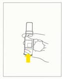
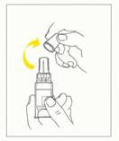
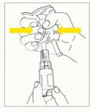
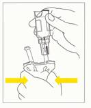

RÉSUMÉ DES CARACTÉRISTIQUES DU PRODUIT
ANSM - Mis à jour le : 24/11/2006
OMEPRAZOLE AGUETTANT 40 mg, poudre pour solution pour perfusion
2. COMPOSITION QUALITATIVE ET QUANTITATIVE
Oméprazole ....................................................................................................................................... 40 mg
Pour 1 flacon de poudre.
Pour la liste complète des excipients, voir rubrique 6.1.
Poudre pour solution pour perfusion.
4.1. Indications thérapeutiques
Traitement antisécrétoire gastrique lorsque la voie orale est impossible.
4.2. Posologie et mode d'administration
Perfusion intraveineuse lente (sur 20 à 30 minutes) une fois par jour.
Hypersensibilité à l'un des constituants de ce médicament.
4.4. Mises en garde spéciales et précautions d'emploi
Mises en garde
Comme les autres anti-sécrétoires gastriques, l'oméprazole favorise le développement de bactéries intragastriques par diminution du volume et de l'acidité du suc gastrique.
Précautions d'emploi
· En cas d'ulcère gastrique, il est recommandé de vérifier la bénignité de la lésion avant traitement.
· Sujet âgé: aucun ajustement des doses n'est nécessaire.
· Insuffisance rénale: la biodisponibilité de l'oméprazole n'est significativement pas modifiée.
· Insuffisance hépatique: la surface sous la courbe est augmentée et l'élimination est ralentie; une dose de 20 mg d'oméprazole est généralement suffisante chez ces patients.
Ce médicament contient 42,6 mg par flacon: en tenir compte chez les personnes suivant un régime hyposodé strict.
4.5. Interactions avec d'autres médicaments et autres formes d'interactions
Associations à prendre en compte
+Kétoconazole, Itraconazole
Diminution de l'absorption de l'azolé antifongique, par augmentation du pH intragastrique par l'oméprazole.
Les études chez l'animal n'ont pas mis en évidence d'effet tératogène. En l'absence d'effet tératogène chez l'animal, un effet malformatif dans l'espèce humaine n'est pas attendu. En effet, à ce jour, les substances responsables de malformations dans l'espèce humaine se sont révélées tératogènes chez l'animal au cours d'études bien conduites sur deux espèces.
En clinique, aucun effet malformatif ou fœtotoxique particulier n'est apparu à ce jour.
Toutefois, le suivi de grossesses exposées à l'oméprazole est insuffisant pour exclure tout risque.
En conséquence, l'utilisation de l'oméprazole ne doit être envisagée au cours de la grossesse que si nécessaire.
En raison du passage de l'oméprazole dans le lait maternel, l'allaitement est à éviter.
4.7. Effets sur l'aptitude à conduire des véhicules et à utiliser des machines
Sans objet.
L'oméprazole est bien toléré et les effets indésirables sont généralement bénins et réversibles.
Les effets indésirables suivants ont été rapportés au cours d'essais cliniques ou lors de l'utilisation en routine, cependant dans la plupart des cas, aucun lien de causalité avec le traitement par oméprazole n'a été établi.
Les fréquences des effets indésirables ont été classées de la façon suivante:
Fréquents (≥ 1/100,< 1/10),
Peu fréquents (≥ 1/1000, <1/100)
Rares (≥ 1/10000,< 1/1000)
Effets gastro-intestinaux
Fréquents: diarrhée, constipation, douleurs abdominales, nausées/vomissements, flatulence.
Rares: sécheresse buccale, stomatite et candidose gastro-intestinale.
Système nerveux central et périphérique
Fréquents: céphalées
Peu fréquents: étourdissements, paresthésie, somnolence, insomnie, vertiges.
Rares: confusion mentale réversible, agitation, agressivité, dépression et hallucinations, particulièrement chez des patients présentant des pathologies sévères.
Effets endocriniens
Rares: gynécomastie.
Système hématopoïétique
Rares: leucopénie, thrombopénie, agranulocytose, pancytopénie et anémie hémolytique.
Effets hépatiques
Peu fréquents: augmentation des enzymes hépatiques.
Rares: encéphalopathie chez les patients ayant une insuffisance hépatique sévère pré-existante, hépatite avec ou sans ictère, insuffisance hépatique.
Système musculo-squelettique
Rares: arthralgies, faiblesses musculaires et myalgies.
Peau
Peu fréquents: Rash et/ou prurit, urticaire
Rares: Photosensibilisation, érythème polymorphe, syndrome de Stevens-Johnson, syndrome de Lyell, alopécie.
Autres
Peu fréquents: Malaise
Rares: Réactions d'hypersensibilité telles que angio-œdème, fièvre, bronchospasme, néphrite interstitielle et choc anaphylactique. Augmentation de la sudation, œdème périphérique, vision trouble, perturbation du goût et hyponatrémie.
Des cas d'atteintes visuelles irréversibles pouvant aller jusqu'à la cécité ont été décrits chez un nombre isolé de patients présentant une altération sévère de leur état général et ayant reçu de l'oméprazole par voie intraveineuse, essentiellement à fortes doses, sans qu'un lien de causalité n'ait été établi.
Des doses jusqu'à 200 mg sur une journée et 520 mg sur trois jours (voie IV) n'ont pas entraîné d'effets secondaires.
Hormis le traitement symptomatique, aucune recommandation thérapeutique spécifique ne peut être donnée en cas de surdosage.
5. PROPRIETES PHARMACOLOGIQUES
5.1. Propriétés pharmacodynamiques
Classe pharmacothérapeutique: INHIBITEURS DE LA POMPE A PROTONS,
Code ATC: A02BC01.
(A: appareil digestif et métabolisme).
L'oméprazole est un inhibiteur spécifique de la pompe à protons H+K+ATPase de la cellule pariétale gastrique: il diminue la sécrétion d'acide, quelle que soit la nature de la stimulation.
Après administration unique de 40 mg d'oméprazole, l'acidité gastrique est diminuée en moyenne de 89%.
5.2. Propriétés pharmacocinétiques
Après administration intraveineuse, la concentration en oméprazole diminue de façon biexponentielle et la demi-vie d'élimination terminale est de 0,5 à 1 heure.
La fixation protéique de l'oméprazole est d'environ 95%.
L'oméprazole est éliminé en totalité par biotransformation hépatique. Les métabolites identifiés dans le plasma sont le sulfone, le sulfure et l'hydroxy-oméprazole (métabolites inactifs). L'excrétion est principalement urinaire, 80% des métabolites sont excrétés dans l'urine, le reste étant éliminé dans les selles. Les deux principaux métabolites retrouvés dans les urines sont l'hydroxy-oméprazole et l'acide carboxylique correspondant.
5.3. Données de sécurité préclinique
Sans objet.
Edétate disodique, hydroxyde de sodium.
En l'absence d'études de compatibilité, ce médicament ne doit pas être mélangé à d'autres médicaments.
Avant ouverture: 2 ans.
Après ouverture: Une utilisation immédiate est recommandée.
Toutefois La stabilité physicochimique de la solution reconstituée dans le chlorure de sodium 0,9 % ou dans le glucose 5 % a été démontrée pendant 12 heures à une température ne dépassant pas +25°C.
6.4. Précautions particulières de conservation
Pas de précautions particulières de conservation.
6.5. Nature et contenu de l'emballage extérieur
Flacon seul:
40 mg en flacon (verre incolore de type II) muni d'un bouchon (bromobutyle) et une capsule en (Aluminium) type flip-off. Boite de 1, 5 ou 10 flacons.
Flacon avec dispositif de transfert intégré:
40 mg de poudre en flacon (verre incolore de type II) muni d'un bouchon (bromobutyle) et d'une capsule (aluminium). Le flacon est «clipsé» dans un boîtier transparent (polystyrène cristal ou polycarbonate), muni d'une aiguille double pointe, triple biseaux (acier inoxydable). Le boîtier est recouvert d'un bouchon blanc (polypropylène ou polyéthylène), protégeant la partie du boîtier contenant l'aiguille. L'ensemble est mis sous blister (PVC/papier grillé laqué pelable). Boite de 1, 5 ou 10.
6.6. Précautions particulières d’élimination et de manipulation
Préparation de la perfusion avec le flacon seul
La solution est reconstituée par mélange du contenu du flacon à 100 ml de chlorure de sodium 0,9% pour injection ou 100 ml de glucose 5% pour injection. La solution doit être utilisée immédiatement.
Une fois reconstituée, la solution ne doit être ni mélangée, ni co-administrée sur la même ligne de perfusion avec aucun autre soluté massif ou autre médicament.
1. Au moyen d'une seringue, aspirer 5 ml de la solution de chlorure de sodium 0,9% ou de glucose 5%.
2. Introduire ce volume dans le flacon de poudre d'oméprazole et mélanger jusqu'à dissolution complète.
3. Aspirer la solution obtenue.
4. Transférer cette solution dans le flacon ou la poche pour perfusion.
5. Répéter les étapes 1 à 4 de façon à s'assurer que tout le produit a été transféré.
Méthode alternative avec le flacon seul
1. Au moyen d'un set de transfert, brancher l'une des entrées sur la poche. Connecter l'autre entrée sur le flacon de poudre.
2. Dissoudre la poudre en pompant la solution (chlorure de sodium ou glucose).
3. S'assurer que la poudre est bien dissoute et réinjecter dans la poche. Déconnecter le flacon vide et l'aiguille de la poche pour perfusion.
Préparation de la perfusion avec le flacon muni du dispositif de transfert intégré
1. Ouvrir le blister après vérification de son intégré, et extraire le dispositif.
2. Tenir le dispositif verticalement, aiguille vers le haut, et perforer le bouchon du flacon en poussant sur le fond du flacon jusqu'en butée (fig.1).
3. Oter le bouchon de protection (fig.2).
4. Enfoncer complètement l'aiguille du dispositif dans le site d'injection de la poche de perfusion, puis en tenant l'ensemble poche/flacon verticalement, poche vers le haut, exercer des pressions répétées sur la poche jusqu'à remplir la moitié du flacon environ (fig.3).
5. Agiter le flacon jusqu'à dissolution complète de la poudre.
6. Retourner l'ensemble poche/flacon, flacon vers le haut, et exercer des pressions répétées sur la poche jusqu'à ce que la solution reconstituée soit entièrement transférée dans la poche (fig.4).
7. Déconnecter le dispositif de la poche et le jeter après remise en place du bouchon protecteur.
8. Agiter la poche de perfusion.
|
 |
 |
 |
 |
|
Fig. 1 |
Fig. 2 |
Fig. 3 |
Fig. 4 |
7. TITULAIRE DE L’AUTORISATION DE MISE SUR LE MARCHE
Laboratoire AGUETTANT
1, rue Alexander Fleming
69007 Lyon Cedex
8. NUMERO(S) D’AUTORISATION DE MISE SUR LE MARCHE
· 377 438-6: 40 mg de poudre en flacon (verre), boîte de 1.
· 377 439-2: 40 mg de poudre en flacon (verre), boîte de 5.
· 377 440-0: 40 mg de poudre en flacon (verre), boîte de 10.
· 377 465-3: 40 mg de poudre en flacon (verre) avec dispositif de transfert intégré, boîte de 1.
· 377 467-6: 40 mg de poudre en flacon (verre) avec dispositif de transfert intégré, boîte de 5.
· 377 468-2: 40 mg de poudre en flacon (verre) avec dispositif de transfert intégré, boîte de 10.
9. DATE DE PREMIERE AUTORISATION/DE RENOUVELLEMENT DE L’AUTORISATION
[à compléter par le titulaire]
10. DATE DE MISE A JOUR DU TEXTE
[à compléter par le titulaire]
Sans objet.
12. INSTRUCTIONS POUR LA PREPARATION DES RADIOPHARMACEUTIQUES
Sans objet.
Liste II.